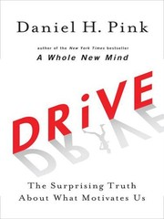
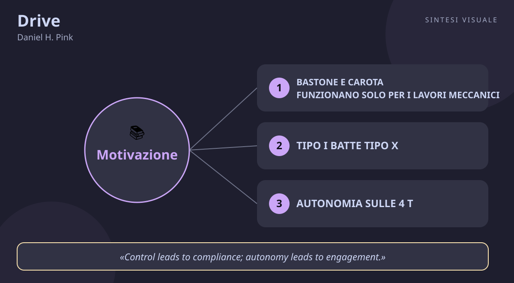

Drive
Daniel H. Pink · Carriera e motivazione
«Drive»
- Bastone e carota
- Tipo I batte Tipo X
- Autonomia padronanza scopo
- Paga zen
🧭Introduzione
Daniel H. Pink non è uno psicologo da laboratorio: ha studiato legge, poi ha fatto lo speechwriter alla Casa Bianca (per il vicepresidente Al Gore) e ha scritto di economia e lavoro per il New York Times e Harvard Business Review. La domanda che lo tormentava era semplice e scomoda: perché nelle aziende si continua a motivare le persone come negli anni Cinquanta — premi e punizioni, carota e bastone — mentre la scienza dice da decenni che funziona al contrario? Per rispondere ha passato in rassegna quarant'anni di ricerche sulla motivazione umana e nel 2009 ha pubblicato questo libro, diventato bestseller del New York Times e tradotto in decine di paesi (in italiano Drive. La verità sorprendente su ciò che ci motiva).
Perché conta oggi: viviamo nell'economia della conoscenza — programmatori, insegnanti, venditori, medici, creativi: quasi nessuno fa più un lavoro puramente meccanico. Eppure bonus, paghe a cottimo e classifiche continuano a dominare scuole e aziende. C'è un divario tra ciò che la scienza sa e ciò che le aziende fanno, e questo libro è la mappa per colmarlo: spiega perché i premi in denaro spesso peggiorano i risultati nei lavori creativi e cosa funziona davvero al loro posto.
A chi è utile: a chi guida persone (manager, genitori, insegnanti, allenatori), a chi si sente demotivato nonostante uno stipendio decente, e a chiunque voglia capire cosa lo fa alzare la mattina con voglia di fare bene.
📘Riassunto
La scintilla centrale: per i lavori che richiedono pensiero, creatività e decisioni, la motivazione vera non viene da premi e punizioni ma da tre bisogni profondi — dirigere la propria vita, diventare bravi in qualcosa che conta, servire uno scopo più grande di sé.
La struttura logica procede in tre parti:
- Un nuovo sistema operativo — Pink racconta la storia della motivazione come tre versioni di software: la Motivazione 1.0 (gli istinti di sopravvivenza), la 2.0 (il bastone e la carota dell'era industriale: se fai X ottieni Y) e la 3.0, necessaria oggi. Cita gli esperimenti fondativi: le scimmie di Harry Harlow che risolvevano enigmi per il solo gusto di farlo, e Edward Deci con i cubi Soma — quando ai partecipanti venne offerto denaro per giocare, smisero di giocare appena i soldi finirono. Poi elenca le sette ragioni per cui bastone e carota falliscono (spengono la motivazione intrinseca, riducono i risultati creativi, incoraggiano imbrogli e scorciatoie, uccidono la creatività, favoriscono il pensiero di breve periodo...) e distingue due profili: il Tipo X (mosso da ricompense esterne) e il Tipo I (mosso dal desiderio interno di dirigere la propria vita, imparare e contribuire) — che rende di più e sta meglio.
- I tre elementi — il cuore del libro, un capitolo ciascuno: autonomia (il desiderio di dirigere la propria vita: cosa fare, quando, come e con chi), padronanza (l'impulso a diventare sempre più bravi in qualcosa che conta) e scopo (il desiderio di fare ciò che facciamo al servizio di qualcosa più grande di noi). Con esempi aziendali reali: le giornate "FedEx" di Atlassian, il 20% del tempo libero di Google (da cui nacquero Gmail e Google News), l'ambiente di lavoro ROWE dove conta solo il risultato.
- Il kit del Tipo I — strumenti pratici: nove strategie per i singoli, nove idee per le aziende, lo "zen della retribuzione" (paga abbastanza da togliere i soldi dal tavolo, poi smetti di usarli come leva), e nove idee per genitori ed educatori (paghette separate dalle faccende, lodare impegno e strategia invece dell'intelligenza, pagelle fai-da-te).
Il punto di svolta: il capitolo sulla retribuzione: paga le persone abbastanza da togliere il denaro dal tavolo delle preoccupazioni. Da lì il lettore capisce che il denaro è come l'igiene: se manca avvelena tutto, ma oltre una soglia equa non motiva più nessuno — e la vera partita si gioca altrove.
L'eredità oggi: Drive ha cambiato il linguaggio del management moderno — "lavoro autonomo", "scopo aziendale", "settimane di 4 giorni" e "risultati invece di ore" vengono da qui. Citato da economisti e scuole di business di tutto il mondo, resta il testo più chiaro sul perché le persone creative non si comprano: si liberano.
💡Concetti chiave
- Bastone e carota funzionano solo per i lavori meccanici: appena serve pensare, creare o decidere, i premi in denaro peggiorano i risultati invece di migliorarli.
- Tipo I batte Tipo X: chi è mosso da dentro (curiosità, crescita, contributo) rende di più, impara di più ed è più felice di chi insegue solo ricompense esterne — e il Tipo I si può diventare.
- Autonomia sulle 4 T: dare controllo su compito, tempo, tecnica e squadra trasforma l'obbedienza in coinvolgimento.
- La padronanza è un asintoto doloroso e bellissimo: diventare bravi richiede compiti "Goldilocks" (né troppo facili né impossibili), mentalità di crescita e pratica che brucia — e non si arriva mai del tutto, ed è questo il bello.
- Lo scopo massimizza i profitti: le persone e le aziende che servono una causa più grande del guadagno ottengono anche più guadagno.
- Paga in modo zen, poi smetti di parlare di soldi: retribuzione equa e trasparente per togliere il denaro dai pensieri, poi autonomia, padronanza e scopo come veri motori.
📖1. Bastone e carota funzionano solo per i lavori meccanici
- Definizione i premi "se fai X ottieni Y" funzionano per compiti semplici e ripetitivi, ma per lavori cognitivi restringono il campo visivo mentale: la persona si concentra sul premio e smette di esplorare soluzioni creative. Pink lo mostra con il celebre problema della candela: chi aveva in palio un premio in denaro impiegava più tempo a risolverlo di chi non aveva incentivi.
- Esempio un'agenzia offre un bonus a chi chiude più preventivi in una settimana: i commerciali spingono contratti standard e veloci e smettono di inventare soluzioni su misura per i clienti difficili — i numeri di breve salgono, la qualità e la fantasia crollano.
- Come applicarlo (a) prima di promettere un bonus chiediti "questo lavoro richiede creatività o giudizio?": se sì, non legare il premio al singolo risultato; (b) per i lavori meccanici sì ai premi chiari e immediati; (c) per quelli creativi punta su obiettivi di apprendimento ("migliora questo processo") invece che di prestazione ("chiudi 10 contratti").
- Errore comune credere che "se un premio non ha funzionato, serviva un premio più grande" — raddoppiare la carota raddoppia il danno sui lavori creativi; oppure usare i bonus per rimediare a uno stipendio base ingiusto (prima rendi equa la base, poi ragiona sui premi).
- Collegamento l'effetto sovragiustificazione studiato da Edward Deci e Mark Lepper (i bambini pagati per disegnare smettono di disegnare gratis); e Alfie Kohn (Punished by Rewards), che Pink cita: i premi sono come punizioni travestite.
📖2. Tipo I batte Tipo X
- Definizione il Tipo X è mosso da motivatori estrinseci (soldi, voti, status, paura del capo); il Tipo I da motivatori intrinseci (autonomia, padronanza, scopo). Il Tipo I non disprezza i soldi — vuole solo che siano equi — e poi corre per la gioia di correre bene. La buona notizia di Pink: il Tipo I non è un tratto di nascita, è un comportamento che si può costruire.
- Esempio due studenti di medicina: uno studia per il voto e per lo stipendio futuro (Tipo X) e sceglie gli esami facili; l'altro perché vuole capire davvero il corpo umano (Tipo I) e affronta i corsi più duri. Dieci anni dopo, il secondo è diventato il medico più bravo del reparto — e paradossalmente guadagna di più.
- Come applicarlo (a) fai il test onesto: "farei questo anche se nessuno mi guardasse né mi pagasse un euro in più?"; (b) sposta un'attività alla settimana da "devo" a "voglio" collegandola a qualcosa che ti incuriosisce; (c) se guidi altri, chiedi "cosa ti piacerebbe imparare qui?" invece di promettere solo premi.
- Errore comune pensare che Tipo I significhi "lavorare gratis per passione" e farsi sfruttare — il Tipo I pretende una paga equa, rifiuta solo di farsi comprare l'anima; oppure etichettare le persone ("lui è un Tipo X, perso per sempre") invece dei comportamenti, che possono cambiare.
- Collegamento la teoria dell'autodeterminazione di Deci e Ryan (i tre bisogni di autonomia, competenza e relazione), che è il fondamento scientifico del libro; e Carol Dweck (Mindset): lodare il processo nutre il Tipo I.
📖3. Autonomia sulle 4 T
- Definizione l'autonomia è il bisogno di dirigere la propria vita, e al lavoro si gioca su quattro leve — compito (cosa faccio), tempo (quando lo faccio), tecnica (come lo faccio) e squadra (con chi lo faccio). Il controllo produce obbedienza, l'autonomia produce coinvolgimento: stessa persona, risultati opposti a seconda di quanta scelta le lasci.
- Esempio un'azienda concede il venerdì pomeriggio libero per progetti a scelta (come le FedEx days di Atlassian o il 20% di Google): un impiegato del supporto crea uno script che dimezza i ticket ripetuti — un'innovazione che nessun premio a cottimo avrebbe mai comprato.
- Come applicarlo (a) individua una delle 4 T dove puoi allargare la scelta già da lunedì (orari flessibili, metodo libero, un'ora a settimana per un progetto tuo); (b) se sei capo, sostituisci un controllo ("mandami il report ogni sera") con un risultato ("entro venerdì il cliente deve avere X"); (c) misura gli esiti, non le ore di sedia.
- Errore comune confondere autonomia con abbandono — mollare le persone senza obiettivi né feedback non è libertà, è caos; oppure concederla a parole ("fai pure come vuoi, ma poi rifacciamo tutto come dico io"), che è peggio del controllo dichiarato.
- Collegamento il ROWE (Results-Only Work Environment) sperimentato da Best Buy e raccontato nel libro; e Reinventing Organizations di Laloux, che porta l'autonomia all'estremo con le aziende senza capi.
📖4. La padronanza è un asintoto doloroso e bellissimo
- Definizione la padronanza (mastery) è l'impulso a diventare sempre più bravi in qualcosa che conta. Ha tre leggi: è una mentalità (serve credere che le capacità si possano sviluppare), è fatica (richiede sforzo deliberato, "flow" e compiti Goldilocks: né troppo facili da annoiare né troppo duri da angosciare), ed è un asintoto (ci si avvicina sempre senza mai toccare la perfezione — ed è proprio questa inafferrabilità a renderla irresistibile).
- Esempio impari a fare il pane: le prime pagnotte sono mattoni, poi trovi l'idratazione giusta, poi sperimenti le pieghe — ogni mese un micro-miglioramento. Non sarai mai "il fornaio perfetto", ma ogni infornata ti dà più soddisfazione della precedente: quella è la curva della padronanza.
- Come applicarlo (a) scegli un'abilità che conta per te e definisci il prossimo micro-gradino (non "parlare inglese", ma "tenere 5 minuti di conversazione senza blocchi"); (b) cerca compiti Goldilocks: se ti annoi alza la difficoltà, se ti angosci abbassala; (c) misura i progressi ogni mese, non ogni giorno.
- Errore comune volere la padronanza senza il dolore — comprare il decimo corso e non fare mai gli esercizi scomodi; oppure pretendere la perfezione subito e mollare alla prima pagnotta-mattone ("non sono portato"), scambiando il plateau per un fallimento.
- Collegamento il "flow" di Mihaly Csikszentmihalyi, che Pink usa per descrivere il momento d'oro della padronanza; e la pratica deliberata di Anders Ericsson (ripresa da Angela Duckworth in Grit).
📖5. Lo scopo massimizza i profitti
- Definizione lo scopo è il desiderio di fare ciò che facciamo al servizio di qualcosa più grande di noi. Pink mostra che individui e aziende orientati a uno scopo (purpose maximizers) — non solo al profitto — ottengono paradossalmente risultati economici migliori: clienti più fedeli, dipendenti più coinvolti, meno turnover. Le parole contano: chi dice "noi" invece di "loro" parlando dell'azienda lavora per una causa, non per un padrone.
- Esempio due idraulici a pari bravura: uno "stura tubi", l'altro "fa in modo che le famiglie abbiano una casa sana". Il secondo spiega, consiglia, richiama per controllare — i clienti lo raccomandano a tutti e può chiedere di più: stesso lavoro, scopo diverso, incassi diversi.
- Come applicarlo (a) riscrivi il tuo lavoro in una frase di contributo ("il mio lavoro permette a ___ di ___"); (b) appendila dove la vedi ogni mattina; (c) se guidi un gruppo, apri le riunioni con una storia di cliente aiutato, non con i numeri del trimestre.
- Errore comune lo scopo finto da brochure ("la nostra mission è l'eccellenza sinergica centrata sul cliente") che nessuno crede — peggio di non averlo; oppure usarlo come scusa per pagare poco ("qui si lavora per la passione!"): scopo e paga equa devono andare insieme.
- Collegamento Start with Why di Simon Sinek (il cerchio d'oro: la gente non compra cosa fai, ma perché lo fai); e gli studi di Adam Grant citati da Pink sui fundraiser universitari che, leggendo le storie degli studenti aiutati, raccolsero molto di più.
📖6. Paga in modo zen, poi smetti di parlare di soldi
- Definizione lo "zen della retribuzione" ha tre regole: paga in modo equo (niente favoritismi), paga sopra la media (per togliere i soldi dai pensieri) e poi rendi la retribuzione autonoma (trasparente, non legata a giochetti). Una volta che il denaro è "sul tavolo" in misura giusta, smette di demotivare — e puoi accendere i veri motori: autonomia, padronanza e scopo.
- Esempio una piccola impresa alza gli stipendi al livello alto del settore e pubblica i criteri degli aumenti: spariscono i malumori da corridoio sui "preferiti del capo" e le discussioni passano da "quanto mi dai se..." a "come facciamo meglio questo progetto?".
- Come applicarlo (a) verifica se la tua paga è equa rispetto al mercato (se sei dipendente) o se quella che offri lo è (se sei capo); (b) separa le conversazioni: i soldi si discutono in sede di contratto, non come ricatto quotidiano; (c) sostituisci i bonus a sorpresa con feedback e crescita ("ti finanzio il corso che vuoi tu").
- Errore comune usare i bonus come cerotto per stipendi bassi o ambienti tossici — funzionano per un mese e poi servono dosi sempre maggiori; oppure il segreto salariale opaco, che fa immaginare a tutti di essere sottopagati e avvelena la fiducia.
- Collegamento la teoria dei due fattori di Herzberg (lo stipendio è un fattore "igienico": se manca demotiva, se c'è non motiva); e Reinventing Organizations/aziende con stipendi trasparenti, che applicano lo zen alla lettera.
💬Citazioni da ricordare
"When it comes to motivation, there's a gap between what science knows and what business does." — Sul perché questo libro esiste: la scienza lo sa da decenni, le aziende fanno ancora finta di niente. Ricordarla ti rende diffidente verso ogni schema a premi.
"Control leads to compliance; autonomy leads to engagement." — La frase-manifesto del libro: se vuoi esecutori obbedienti, controlla; se vuoi persone coinvolte, lascia scegliere. Vale per uffici, classi e famiglie.
"Autonomy: the desire to direct our own lives; Mastery: the urge to get better and better at something that matters; and Purpose: the yearning to do what we do in the service of something larger than ourselves." — I tre motori in una sola frase: stampatela in testa, perché ogni volta che un lavoro ti spegne manca almeno uno dei tre.
🌍Esempi di oggi
- Il bonus che uccide la creatività in ufficio. Il capo promette 500 euro a chi propone l'idea scelta per la campagna natalizia: arrivano dieci proposte fotocopia, sicure e banali, perché tutti mirano al premio invece di rischiare. Senza gara, con tempo libero per sperimentare, sarebbe nata almeno un'idea coraggiosa.
- La professoressa che trasforma i compiti in padronanza. Invece di votare ogni esercizio, un'insegnante di matematica dà problemi "Goldilocks" a scelta su tre livelli e fa rifare gli errori per migliorare il voto: gli studenti smettono di copiare per il 6 e iniziano a ragionare per capire — Tipo I in azione tra i banchi.
- Il freelance che riscopre lo scopo. Un grafico stanco di loghi anonimi inizia a lavorare gratis un giorno al mese per un'associazione del quartiere e racconta quei progetti ai clienti: ritrova energia, i clienti lo percepiscono più motivato e gli affidano lavori migliori — lo scopo traina anche il fatturato.
🛠️Azioni pratiche
- Fai il test del denaro sul tavolo: chiediti se la tua paga (o quella che offri) è equa. Se no, pianifica una mossa concreta per sistemarla; se sì, smetti di pensarci per una settimana e osserva cosa ti motiva davvero.
- Conquista un'ora di autonomia: ritaglia 60 minuti alla settimana per un progetto scelto da te dentro il tuo lavoro o studio — senza doverlo giustificare a nessuno. Lunedì prossimo racconta a qualcuno cosa hai scoperto.
- Scrivi la tua frase di scopo: completa "il mio lavoro permette a ___ di ___" e mettila dove la leggi ogni mattina (sfondo telefono, post-it sul monitor). Se non riesci a completarla, è quello il vero problema da risolvere.
💎Da portare a casa
Non farti comprare: fatti liberare — autonomia, padronanza e scopo rendono di più di qualsiasi premio.
Ti è rimasto un dubbio o vuoi andare più a fondo? Rispondi in chat con il numero del concetto (1–6) e lo espandiamo insieme con altri esempi, oppure fai una domanda su un tema: motivazione al lavoro, stipendi e bonus, autonomia in azienda, educare i figli senza premi, carriera e scopo...
🖼️In un colpo d’occhio

Tocca l’immagine per ingrandirla.